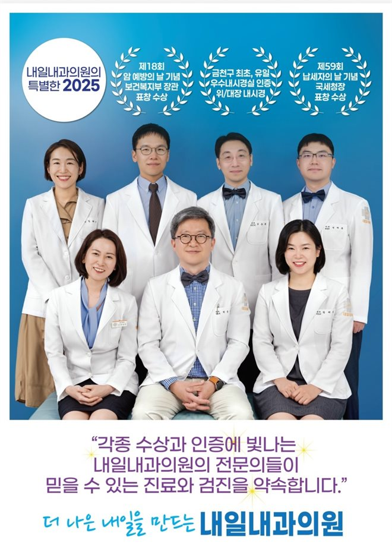

진료과목
내일내과의원 금천점의 진료과목
내과질환
고혈압, 당뇨, 고지혈, 협심증, 골다공증
기침, 두통, 설사, 복통, 알레르기
위염, 장염, 간염, 기관지염, 천식, 폐렴
갑상선항진/저하, 갑상선결절, 유방결절
기침, 두통, 설사, 복통, 알레르기
위염, 장염, 간염, 기관지염, 천식, 폐렴
갑상선항진/저하, 갑상선결절, 유방결절
건강검진
시설입소용 검진
공단검진
채용검진(공무원, 일반, 잠복결핵, 마약류검사)
직장검진
종합검진(개인별 맞춤 검진, 10대암 검진)
공단검진
채용검진(공무원, 일반, 잠복결핵, 마약류검사)
직장검진
종합검진(개인별 맞춤 검진, 10대암 검진)
내시경 & 초음파 & 임상병리 & 방사선
(수면)위내시경, (수면)대장내시경, 대장용종절제술
복부초음파, 경동맥초음파, 갑상선초음파, 유방초음파, 심장초음파
CT 검사, X선검사, 유방촬영술, 골다공증검사, 폐기능검사
심전도, 동맥경화도검사(ABI)
각종 혈액검사, 암표지자, 알러지/호르몬검사
복부초음파, 경동맥초음파, 갑상선초음파, 유방초음파, 심장초음파
CT 검사, X선검사, 유방촬영술, 골다공증검사, 폐기능검사
심전도, 동맥경화도검사(ABI)
각종 혈액검사, 암표지자, 알러지/호르몬검사
웰빙클리닉
예방접종(독감, 간염, 자궁경부암, 파상풍, 코로나, 대상포진)
영양수액, 마이어스카테일, 종합비타민주사, 비타민D주사
유전체DNA검사, NK세포활성도 검사, 면역력주사(Thymosin-A)
치매 아밀로이드베타검사
영양수액, 마이어스카테일, 종합비타민주사, 비타민D주사
유전체DNA검사, NK세포활성도 검사, 면역력주사(Thymosin-A)
치매 아밀로이드베타검사

내일내과의원의 수상 및 인증
- 금천구 최초·유일 우수내시경실 인증 — 대한소화기내시경학회, 위·대장내시경 부문 (인증기간 2024.12~2027.11)
- 보건복지부 장관 표창 수상 — 제18회 암 예방의 날 기념
- 국세청장 표창 수상 — 제59회 납세자의 날 기념